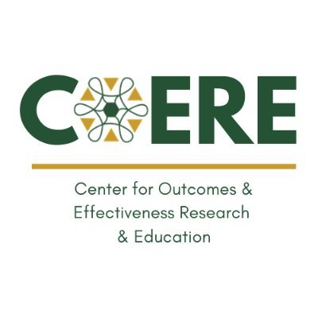

About Us
From tiny beginnings to strong endings
Our vision is a healthier, more equitable future for preterm infants and their families
NICU Nutrition exists to close the gap in breastfeeding support for the families who need it most — mothers navigating the NICU with a premature baby.
Empowering mothers of preterm infants
Evidence-based practices, built around your NICU stay
We aim to establish effective, evidence-based practices that empower mothers of preterm infants to overcome barriers and provide the best possible care for their children during their NICU stay.
Overcoming barriers
Narrowing the racial and ethnic disparity in breastfeeding initiation
This is part of our vision — equitable access to lactation support and breastfeeding education for every mother, regardless of background.
Our Partners
Working together for better outcomes

Contact Us
Drop us a line!
For urgent lactation support during your NICU stay, please notify your bedside nurse or call the UAB lactation team directly at 205-975-8334.